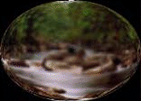
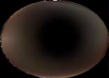
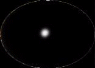
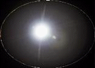
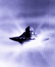
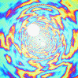

written by Rene K. Mueller
During the last two or three years I have written some short texts which I collected finally in this web-page (was previously RKMCorner). It's written in poor english, forgive me, I will update and correct it at a later time.
What is the relation of Dreams and Out of Body Experiences?
How does it correlate with descriptions of higher-realms?
The problem is holding the perception. The impression in your daily consciousness, your daily-life concepts, have a kind of security lock mechanism, and all other "impressions" are not allowed to come in by your own decision to experience this unique reality. The one self you are is the embodied individuality based on your daily-consciousness, the other selves are also active on the etheric-plane. At the same time, your etheric-presence is also present and active while you are actively and consciously embodied. If you get asleep, just one part rejoins the higher fragments of your consciousness; mainly, you travel with your astral body, this means that you fly in the Aura of the Earth. Sometimes we are experiencing higher dimensions, then our astral-perception is ready to hold etheric or more subtle impressions. Impressions we get from higher or more subtle realities need to travel from a kind of one reality-perception to a lower one, astral-trips are the more closest ones to Earth's reality.
Imagine, you just visit astrally hundreds or even thousands of places each night, maybe you traveled many times through doorways to higher realms, to the etheric plane, or to other heavenly realities (measured from earth-reality), but if you return to your body. There is a brain, a tool to stay in this reality of the Earth, but then a kind of rejection occurs. You just forget the impressions, they stay in your subconsciousness, together with the non-embodied selves.
But, if someone is really aware of his or her astral and higher presences, the sleeping-time gets reduced, because this entity does not need to rejoin its higher fragments/selves because the soul is being consciously connected, or in other words: the soul is self-realized.
Generally, the so called dreams are the impressions from astral planes you can hold better, the planes related to Earth, with all their appearances in forms, colors, time, space and even sometimes gravity when close to the astral-planes.
As an example, nightmares are at the very near astral planes, where thought-forms of incarnated entities are projected during their daily-lives, very sad to perceive. To this near (non-physical) astral-plane we are coming closer now, because Earth is changing to a higher vibration. So, the near astral-planes will join our physical reality we live in and our physical reality will get more fluid, more subtle. Besides, astral nightmares become more physical in our senses, for example, people who are very imbalanced mentally will attract very bounded entities, like mass murdering, which is an extreme example for such a case. The same goes for obsessions - there are psychological reasons, karmic relations and so on.
Such processes will appear fast and will be quickly balanced or cleared, fast implies heaviness. Physical reality touches the lower or denser astral planes, that are even perceived by the embodied entities: the physical reality becomes more astral, more subtle. All the remaining thought-forms in astral-planes take manifestation - karma will be released in a fast way (karma as action vs. reaction).
Why does incarnation frequency grow?
Why are so many entities incarnated, the growth of population?
Because this is a kind of urge to clear karmic linkages within this present reality. Energy that is bounded to this level of existence needs to be released in the incarnation process. Sometimes it also comes accompanied by a non-balanced embodied soul to experience in a common way the energies: obsession. The obsession process is not a simple process: the entities who are involved in the releasing of energy in a certain way, even the obsessed people, help the non-embodied entities to release their energies. This is a very nice service, but generally painful, based on the intensity of the energies. You may read some further thoughts in astral entities and personified energies, or in Christian Rationalism, which deal with personified energies in a spiritualistic way.
But let us go back to dreaming. Psychological dreams: when you dream a situation that you are repeating from a situation you lived physically, until you get to understand the reason and integrate it at soul-level. Also sometimes we live things astrally that we will meet in the future, there are mostly spirit-guardians deeply involved, because we learn on lower or denser astral-planes these things as it is easier to remember and maybe necessary too to keep it in our daily-life. Guardians take the energies of illusion from a higher, subtler astral plane, which isn't that much bounded to time and space, to a more accessible plane where we can remember those patterns. The future becomes more a kind of accessible for us in visions.
The more advanced or subtle realms are not perceived as simple dreams, they are so intense in many ways (colorful, bright, vivid), lots of music and other impressions we take with us, that we sometimes describe them as a real vision. Like a near-death experience that was not just a dream, because the intensity was so deep, and it was not earthly-like as lower or denser astral planes appear in our remembrances. There are different names and descriptions - you may check them. If the impressions you could hold reflect something from your daily-life, then it was psychological, something you lived by imagination, but still close to Earth, in a lower and denser astral plane with lots of similarities to the physical plane.
When you travel through a doorway, even a tunnel in a near-death experience, or another Interdimensional Doorway to other dimensions, you can perceive other entities who may have the shape of a human-body, but with other consistency, as light or intense colors that you never saw before, and you never perceived them on the physical plane. For example, on the etheric level the entities give us the impression of their faces, sometimes they do not have bodies at all, but their faces are built in Light. The entities know how to give you an impression you are able to hold if you come back into the body. The spirit-guardians, which guide you in this way, they know you very well, and the way you are able to keep remembrances.
When my guardians pick me up from my body, then I can reach higher realms with their help, where I can get the teaching. I call it the "Astral/Etheric Teaching". There, we can get impressions from the future and also from the past, the Akashic-Record of Earth is accessible to us. This Akashic-Book is just a concept to describe the travel in space and time related to Earth's history and all its happenings.
After getting the teaching, I often ask them whether it is possible to help me to hold the impressions. Then, the guardians keep talking to me to allow me to hold it and guide me to the more dense astral planes. We enter slowly in Earth's aura and its concepts and they give me protection to concentrate myself to hold it until I reach the plane of concept we call physical reality ...
During this process I remember how the qualities and concepts of Earth enter in my consciousness. The more closely I come to the physical plane, I begin to feel how the time, and even the perception of space grow within me. When I enter in my body, I frequently feel shocked by being so bounded and limited. This shock, I think, rejects the impressions we had and tried to keep, besides the reasons of having hard concepts about other realities when we are awaken.
The embodied soul is influenced mainly by the physical impressions it receive by the physical senses, besides there are covered influences we all are guided, if we perceive it or not, it's only dependent whether we are aware of it.
Embodied souls who aren't able to perceive such influences aren't lost souls, they just decided to ignore or sometimes refuse to perceive, they have the right to do and other should respect descissions general. There is no judgement, in no way, only perception of different influences.
In example, the most physical influences from the lower (dense) astral plane, also the most close non-physical astral-plane, I call the psychological-plane, there are fears, pain, angry and depressions and their thought-forms will take place in dark-grey surrounding.
The psychology does try describe these influences with different success. It's a hopeless feeling staying there, as I visited this plane consciously, I felt as I would not spend much time there. I wanted to leave as soon as possible. Obessions in different ways come also from this plane (as mentionded before), in example, having depressions attract entities who are in the same position, as the feeling of pain brings you together. You not alone with the feeling being alone. It's little bit ironic this situation, because they meet themselves, but they just support their own situation and the pain get heavier. Often such groups hang on incarnated entities to share their sadness, being accepted in their sadness. Such entities can be perceived more or less easily using third-eye, if it's already trained to be used consciously.
An incarnated entity, who feels sad, can release this kind of energy. But entities without body can't do this that easy, the incarnated entity helps the ghost or bounded spirit to release their sadness too. Sometimes it is very difficult to recognize this process (as already described in Dreams, OBE and Higher Planes above). They need help from person who has integrated this situation fully, true realized happiness based on an unconditional love can and will help in such situations. For further and more detailed descriptions look at Astral Entities and Personified Energies.
In the higher planes are still bounded entities who wait for taking body, or helpers who help us sometimes in specific situations. They are well connected to physical plane, sometimes they influence us in daily life.
More liberated entities, who are finished reincarnation cycle / experience, or friendships we made in past lives and from other planets we were incarnated or connected are still in astral present, but they are well aware of their own situation being apart of the Divine Plan.
In the higher and more subtle astral-planes there are entities who are a kind of assigned to help us to grow in a more spiritual way. With their help we realize a lot of daily-life, specially the meaning of happenings we met. They support us to manage our psychological dreams in lower and more dense astral-planes. They help to create the base, we often dream daily situations.
Most, the spirit-guides or guardians help us to connect us to higher planes and realms. In example they help us to leave body at night, help us to realize our etheric-double during we are in body at day. They help us to integrate the Higher-Self in ourselves, by their presence in our thoughts.
The Ashtar-Command, the Space-Brotherhood, The Great White Brotherhood and Ascended Masters are entities on etheric level, most of us are there too with our Etheric Double or Etheric Self.
Some feel attracted to this groups, but even that's a kind of concept we take: we label this groups because we need identification here on physical plane, it's the base to interact here on Earth. I feel very close to Ashtar specially (even when I don't agree with many of the channelings which claim to be from the Ashtar-Command).
So far I perceive, we handle high and subtle energies we receive from beyond etheric-level to manage them on a more etheric-way, specially for Earth and her Energy-Grid to lift here to a higher dimensional connection.
I personally perceived the etheric entities as energy balls, with different colors, as my guardians waked me up, as I was etheric acting. There are huge tunnels and beams ... different groups are assigned to handle specific energies to make them accessible for lower or more dense Creation (as refered in Polaris). The different labeled groups here are "groups" who are connected to different task to handle energies. Some are well aware handling Earth connected energies, as in physical presence they feel very connected to plants or stones.
The etheric-presence is a higher-counterpart of ourselves. Characteristics we have embodied are reflections from etheric-presence. More conscious we integrate this presence, more we are able to recognize our Meaning Of Life, the task we took to realize physical in this present life we live right now on Earth.
As the diagram suggest, the most influence I personally perceive is the etheric presence, the etheric "I AM" presence, who I perceived very long time as a multi-personal entity who guide me, who know who I am truly.
Beside physical, astral and etheric there are more subtle planes, which I didn't included in this short overview.
I will try to explain the several activities of (labeled) interdimensional groups based on my personal understanding and experiences:
The groups and their presences aren't like our (earthian) understanding "groups", they are more energetically groups or agreements:
The Humankind exist partly in 3rd and 4th dimensional reality, even the current shift on our planet, also much releasing of patterns toward Duality and 3rd dimensional Reality. The Planetary Shift or Ascension (or also refered as Great Harvest of Souls) is shown as dotted rectangular from 4th to 5th dimensional density. The 4th dimensional realities are now taking place (1994) since few years (1990-1992). Until 2015-2020 the 4th dimensional reality/density will established fully on the planet. Some predictions suggest the final shift into 5th dimension will happened 100-150 years later - but this will be very fast, because the perception of time in 4th dimensional reality will change quite much (speeding up of time). The Mayan Calendar may give you also a view of the changes.
The Zeta's are helping some parts of humankind to re-connect higher Realities. They and also other Alien-Cultures as well who will come more frequently into our current reality - on the other hand we share our (3rd-dimensional) knowledge we mastered to others, we share the integration of the emotional and mental Self. i.e. to Zeta's who miss this integration.
The Pleiadians showed as lower-interdimensional alien-culture, which coordinate those interdimensional travellers of other cultures. Some entities originally took identity at Pleiades or other Gates (Orion, Sirius etc.) went into 3rd dimensional reality to re-ascend to 4th and then finally 5th dimensional reality as Divine-Service.
The Ashtar-Command is a kind of interplanetary and interdimensional agreement of several cultures - many of us serve there with the own etheric-presence, a Higher-Self fragment (as mentioned in Connection and Influences above). I would like to mentioned also Solara's view of the Celestial Golden Solar-Angel which is another label for the same process of connecting the multi-dimensional Selfs.
One Self of us all is in 5th/6th dimensional groups or independent (of labeled groups), the closeness of Twin/Sister/Dual-Soul is on this density quite much - but that's something you may experience by yourself in meditation or other personal experiences.
Some Space-Beings are: Ashtar, Merku, Esola, Alastar, Monka, Voltra, Awaana, Ishtar, Soltec, Kla-La, Woodok, Hatonn, Kortron, Sutko, Sokka
The Ascended Masters are entities who made their ascension already in the (earthian) past, many still incarnated entities are their associated. I think, this label was created to unify different esotheric/newage/theosophic groups and schoolars toghether, especially those who are related to worship ascended entities from particular religious groups.
Some of the Masters are: Jesus-Sananda, Lord Kuthumi Lord Maitreya, El Morya Gautama Buddha, Confucius St. Germain, Kwan Yin Serapis Bei, Eliah Ezechiel, Nada The Great White Brotherhood is build by Ascended Masters and Cosmic-Beings as well. There are seven/twelve comsic-rays, several beings represent them to invoke them as (quality)-energies or presences: Hilarion, Helios, Maha Chohan, ...
The Michael Legion is a strong unification of star- and light-warriors, straight and very powerful, there are close related to Arch-Angel Michael (not Mikael).
The Metatron Legion is a not well known interdimensional movement which is supporting expansion of higher-vibrational energies/realities to lower order Creation and Realities. As from various sources is known, Metatron is the Creator of the Electron - the base to change the density of energies on variable realities. You may check JJ. Hurtaks Keys of Enoch which discuss several stages of Creation in term of Metatron.
There are many (labeled) groups which have their 3rd dimensional counterparts in movements as The Great White Brotherhood & Ascended Masters (div. Movements), The Space-Brotherhood (div. Movements), The Ashtar Command (Tuella), Star Borne (Solara) and her initiated 11:11 Activation and many more.
The Arch-Angels are a kind of try to personalize Non-Personal Energies which are that powerful, that labels and descriptions simply fail, because it would reduce and limit them - they are so pure that we most refere them as Qualities: Michael, Gabriel, Raphael, Chamuel, Metatron, Zadkiel, Mikael, Melchizedek, Uriel, Jophiel
Beyond 8th dimensional reality I refere the planes/realities which are nearly impossible to describe - Christ-Consciousness or Krshna-Consciousness try to describe those realities and their consciousnesses to realize them - maybe in transcendental stories as div. Upanishads.
These realms and spheres have no limits as we know here: Being Not Separated From The Source.
To travel means to move from one point to another point in space, I refere here traveling in dimensions. All physical manifested "things", entities have their counterpart on astral-plane, it's like there is the form defined, as the physical "thing" appear in physical plane. To travel interplanetary, we need to know on which level of time/space density we travel, which astral-plane.
When we send "vehicles" to Venus, we just travel on physical plane, so we can't find life there, because the equipment in this probe only measure physical influences.
To travel physically on Venus, we can travel with a rocket, which transport our physical body too, or if we travel by a more subtle vehicle, the astral-body without any "astral"-rocket, we reach astral manifestation on Venus which is full of life.
More subtle astral-level we reach, more the time/space relation become flexible, on etheric-level we handle time/space relation to travel.
Beamships are able to fly in different dimensions or astral-planes, a beam will sent out to change time/space relation around the ship, it makes it "objectivly" moving, but mainly it changes time/space twin-relation. More higher planes we reach, spacecraft became more as "energetical" agreements as having a group-meeting, they join their consciousness together and build a "traveling-union".
You may say too, that Earth is a spacecraft, all embodied souls join to an aggreement we named "society", created by the mass-consciousness.
More subtle the "agreement" is based, more advanced the ships become.
Traveling in Space implies Traveling in Time
Here on Earth the density of the time/space relation is so heavy, that we can't change the relation between them, but in higher astral-planes we are able to bend the relation.
Leaving physical-plane: a physical to astral or etheric Lift-Off we perceive as the Light-Tunnel. Even when we leave spontanous the body, or even Near Death Experience. It's just how we perceive changing of dimensional influences, the density.




The Light-Tunnel, Light-Tunnel Movie (49K)
When we reach etheric level, we just can enter at any "entry" we refere as time, more we enter, more we accepted influences, more the density of physical reality grow.
Interplanetary and Intergalactic traveling become easy in this way, because we travel with a prepared vehicle, a vehicle with the same density and consistence as the plane we want visit.
So long we try to travel with a physical body in space, so long we receive the time/space influence of physical-plane.
If we take astral or etheric-body and we are also able to integrate the impression we made with it, then Traveling become really a more whole meaning.
Alien cultures who developed their inner balance are traveling with vehicles which can change their vibrations as they like.

Pleiadian Beamship (Painting)
The pleiadian-beamship may be such one. Ships or Thought-Agreements which are traveling in etheric-plane and traveling on physical-plane too. Such knowledge imply being aware of higher-realms beyond astral and etheric planes, it's means also, that such cultures act conscious in the Divine Plan of Creation.
I read a very interesting thought in Matrix IV by Drunvalo Melchizedek:
The more technologically advanced a civilization becomes, the weaker they become, and they become more separated from The Source.
The most advanced civilizations in the galaxy have nothing outside of themselves.
As part of the discussion about Creation of Merkabah - The Light Body to travel interdimensional. I highly agree with this thought, internally creation is a result of self-realization and awareness, externally creation is result of researching with lack of self-recognition.
Therefore, traveling in externally created ships imply bounding, as traveling with an airplane - traveling in astral-body is still bounded, but not that much, it gives access to many layers of Astral-Plane. This perception, of Inner Realization vs Technology is a main part of the evolution in a certain reality, we are slowly get conscious of it now.
A good view may give the dolphins as example of internally realization, which are closly related to the Sirius Doorway.
A further discussion on Space/Beam-Ships you find here.
I had several talkings about OBE or OOBE - especially which technique or method I use. I will try to explain and illustrate here it short, nevertheless complete I hope.
First, I personally don't follow any established technique. I tried some but most I failed because of different reasons. One reason was that I always was (mental) thinking too much during relaxing - only few times I was consicous during I left the physical-body.
The most common experiences I had, are waking-up during I was out-of-body. It means, I get conscious while was already out. More I was enjoying this circumstance and had also confirmations that I was really out there, more I was able to perceive how it works for me personally the best.
I saw for myself, if I promise or command myself to do, to meet, to interact or whatever - I will experience it.
Therefore I call it Astral-Programming: you create a pattern in your daily consciousness, which will triggered when you are out-of-body - this pattern needs created deep in you - else it happens that you just forget to do so, because you have many things to do beyond physical-plane - very busy there.
Those who are aware of their spirit-guardians, I would suggest to ask them for help to wake-up astrally - they are glad to help you in this way. They often prepared myself going on higher-planes of astral and gave me a kind of hint as "hey, you wanted to remember this ...", like I was that involved and busy, I just forgot to remember for my physical oriented consciousness.
Talk about the things you would like to do in astral/etheric or higher-planes to people who are open for such thoughts.
These points are important to prepare yourself to remember. Analyze fears also, you may have covered - uncover them as they are, face them direct. Fear is boundage to remember.
Pray or meditate before, release the fear you may have. Remember, you are always protected by your spirit-guardians and light-beings around you, invoke them by loving thoughts about them.
After programming you may expect a remembrance within the next few days, at least after five/six days (very dependent how you are grounded).
It may like a dream, but something in you will know, it could be an OBE - if you feel, it could be - check it out:
Psychological dreams are neccessary being cleared, because of your emotional balance - I think nearly all people dream pyschological, maybe not all remember them. But they aren't regular out-of-bodies, because you experienced self-created reality (dream).
Many times it's indicate a psychological dream (also astral), but you were alone to release those patterns related to relatives, especially when many relatives appear.
How are your beliefs about violence or sexuality view, do you refuse it? Sometimes we face in psychological dreams those we have, but our daily-consciousness isn't able to accept, because of society patterns or hard defined moral-views.
Be careful to change psychological astral-dreams into regular astral out-of-body, you only cheat yourself.
You may saw entities who made you fear - it tends being a psychological dream involving lower astral-plane entities you attracted by having very much fear of something you don't face in your present life (I simplify here little bit).
Nightmares may also happened, when you drunk alcohol or used drugs before you wanted having an out-of-body experience.
I personaly never had such an out-of-body as I used this astral-programming procedure I explain here.
Now we come closer to regular astral-meetings or out-of-body experiences:
Check how long before they died, few weeks or days, you may had real astral-connact with them - they sometimes try to calm those, who are thinking in pain or longing of common past time to help them to integrate the circumstance, that they left the physical plane.
If relatives died long time before, they may look much younger as they died - then it may also a regular meeting.
But if there are emotions of hate or fear involved - it may tend being a psychological dream - because des-incarnated beings come only into dreams to calm or to general help those who are longing to them, but not to hurt them or create painful emotions.
This may indicate more a regular astral-meeting, try to remember how it was as you remember this dream. If it was spontaneous, you realized: "I know you - come let us to do some things", then you were that close to this person astrally, you may have choosen sub-consciously to integrate this astral-friendship to daily-consciousness. Then, it's will happen, that you may meet this person physically too - then let your feelings guide you: But don't embrance the person, and say: "I was meeting you astrally!" This person may not prapared intellectually or mentally for those remembrance you prapered yourself before, go step by step closer to him/her in talking - you will automatically talk about the same things you did talked in astral-plane. Because in astral you also programmed yourself astrally to talk on physical-plane about the same things - that you and this person will able to remember or having feelings as "It's like I talked with him/her already". The sentences you may share will be clear and you both may agree highly without having a fight-discussion. But you may remember, don't force his/her rememberance - this person needs to open her/himself.
This indicates often, you may meet this person later physically - and when meeting him/her, allow to accept it mentally you perceived this person before - share some ideas about dreaming or meditation, you will come automatically to the common interest you may have.
If physical-oriented subjects appear, but in intensiv colors, you are still on astral-plane, but on higher ones. Check, how many physical oriented qualities you perceived:
If the answers are similar as to physical-plane, but maybe much more intensified ie. colors or feeling very long time (years or so) - then you may enjoyed higher astral-planes.
Those planes are quite beautiful and I'm not able to describe them accuratly. The qualities are quite different to this present physical reality:
I could write much more on it, but on the other side - I don't want program you for expectations when having an out-of-body on higher astral-planes.
I may write later more here, if some are interested in.
Generally, those things you are remembering are keys - you took these impressions back into your daily-consciousness, work with them and be also patient, if you don't receive immediatly (physical) confirmations.
God Give Me Patient, Right Now Please!
If you are really interested to learn and integrate your activities in astral/etheric plane - you may write those out-of-body experiences down to a booklet - or program yourself not forgetting those wonderful dreams and experiences.
Those who may read the previous articles I included in the RKMCorner may understand, that I just talked about a part of the Integration of Perceptions of the non-embodied parts of Self to the embodied Self.
Finally: Allow to receive your impressions to you, to your daily-consciousness, that's all. I call it Programming, you may call it as an Act of Will.

Interdimensional Traveling, Movie (MPEG 380K)
Few years ago I was concious out-of-body and flew with a Pleiadian-Beamship. The remembrance I could hold was staying out of the Beamship looking to other light-beams and their Beamships. After I was back in body I had the impression of a Trek, even the "Dreamers" follow this path, "Dreamers" who are out-of-body and follow their task on higher-dimensional activities.
The Beamships aren't that they were build by metal, much more only by light, tought-forms as light. It shows the most intensive impresssion I can remember, the "traveling" to a doorway, an interdimensional doorway. Changing of deep intensive colors, so intensive you could feel the colors as warmth, even I wasn't with body, but I felt so comfortable, so in peace.
I couldn't program it as I perceived in all details, it's just a try.
More about this experience I will write later ...
July 4 1994
Few weeks ago, I was talking with two people about spirituality, kundalini and astra-traveling. I revealed the Zeta's and their project of cloning new hybrid to create a new race, which will live in 4th density realities.
It was a kind of strange to talk about it, because on the one hand I felt that I should talk about it, but I also felt that they may not ready to listen such crazy stories. Later I told one of them that I would show him the Zeta's.
On the next night I went to sleep and woke up astrally (OBE), conscious that I was dreaming in astral-plane. There I meet the one, who I was talking to previously about OBE and Astral Traveling. He was just surprised meeting me there - I was not sure whether he was conscious of it. Later we went to a certain (astral) place:
Triangular Ships In The Astral Sky
I felt very overwhelming seeing them - but I expected something, but not like this! But I remembered to listen into myself, activate my heart-charka to send a loving-beam to them, if they are light-beings they will able to confirm it with a love-beam.
Then something strange happened, I heared a music-piece, which I often listen to using headphones on CD (physically) - a piece of praying to Maria. It always touched me deep when I listened it. Now, I was astral, and I listenend the same piece very loud in my head - not by my (astrally) ears.
This moment I enjoyed very much - the later or previous circumstances I can't remember right now.
Next day I was thinking often about the meeting. But I thought about it and I felt fear in me - it triggered a non-secure feeling, being manipulated. The sound was switched on in my head - not smoothly as I expected - but like switching on a radio, even mechanical.
I also ask the friend next day whether he could remember something from the previous night, but he couldn't, he only woke up in sweat, he mentioned.
I hadn't well integrated the happening - the fear came from deep inside me. I thought too, when I'm feel this fear how would it be for others who may not that open as I thought I might be until this meeting?
Some weeks later I slowly understood what happened (I think), it may not complete, but enough to integrate the happening in myself:
More I was thinking about this meeting, I was understanding my connections toward Zeta's - aprox. two years ago I heared consciously the first time about them, I read also similar versions of their history and why they get so un-emotionally.
There I was feeling to help them - mentally I knew, they are so high-developed in technique as traveling in certain dimensions but on the feeling-level of my understanding (heart-chakra) I was perceiving, I may help them to integrate their emotional bodies.
Mentally I was understanding much - but my emotional body had problems to understand as I experienced it with my daily consciousness. I know, my experience is just a tiny one - messured to real abduction remembrances. But it illustrated me, how the coming years will be for some parts of our society, who may have astral/physical contacts with alien-cultures, not only to Zetas.
Dec 16, 1994
Some weeks ago, I had an experience I like to share, in terms of describing or explaining some concepts of myself:
One evening, I was at dinner, and was currently thinking about the concepts I had, and the way people leave physical plane in death-process: enter the tunnel, and reach the light - and how are concepts or belief-systems affect this process, who has it easier:
More I was thinking, I wasn't sure, whether my view will maybe prevent me to allow to be - just to be - not to think how it may be, just allowing how it will be, like the one with no concept could allow, maybe.
The one with lot of concepts, maybe too hard concepts as getting to a real dogma, will have it hard to allow to release his/her views, when s/he leaves the physical-plane, as those are becoming sometimes bound entities.
My thoughts moved also to the aspects, that lack of concepts doesn't imply a lack of experience. As many people had Out Of Body Experiences, but didn't paid much attention, or denied later their experiences. I felt, how important it is, beside all concepts having the openness to allow to experience things.
In this way, I remembered my concepts of my etheric-presence on the Mothership (ref. Ashtar Command and Interdim. Traveling), where I AM etheric present and I continued to think (mental/intellectual) that if I AM there, in the same moment, what's then The Ascension, when I AM there already?
I was still eating, and my girlfriend was in front of me ... and I decided to pull myself out of the physical reality to return ...
IT HAPPENED IMMEDIATLY ... <Snip> ...
I returned after a while, which I don't know how long it was, seconds, minutes or hours ... I entered into the physical body by a kind of tunnel, as I would enter in a glueish cloth-piece. I've got conscious that I was in a defined room, with limits, with a certain size or space ... it was weird ... I looked out of two holes (my eyes) and watched an unknown person in front of me, who put stuff into the mouth (my girlfriend was still eating)
I asked myself: What I'm doing here!? Like a stranger who entered a weird place.
After some moments I knew or remembered, after I made the full contact with my brain/mind, that I'm still at the dinner, with my girlfriend who sat on the other side of the table in front of me.
Then I realized I was pulling myself out of the personality I AM on physical, and felt how it is being away, in another vibrational reality. And the main point was, I realized, that I AM etheric, and the personality on physical is a portion of me, and I can return any time, but I can't conceptualize it in my body with my brain/mind tool yet.
As my body is a library of progress I made on physical, which is an expression of my Self I sent out of Etheric Reality. I AM anchored by having a physical body, but there is still a far distance between both realities I live, I AM existing.
Answering my previous question for myself: The Ascension is, to develop the physical vehicle to be able to keep the etheric vibration in it, this will be effect a huge change of concepts and other patterns, and I knew in this moment, my thinking maps a certain perception with concepts, but I have todo more: transforming the body to allow to be complete within: as physical (brain/mind) personality, etheric I AM presence, and the other aspects.
What I was looking for: I wanted to know and verify, whether I could leave anytime this physical plane to return, and I know now, I can. But that's not the intention of my presence: to leave, but to develop and enrich the reality I participate and pulling the whole surrounding with me, into fifth dimensional reality I AM, that's my feelings of The Ascension. As Going-Up is then with the physical body, as vehicle, but with no limits ...
Different as Astral-Programming or other techniques of OOBE, this Going-Up was made without any preparation, no relaxing, no meditation, or chakra-preparation (which maybe was the reason why I could almost nothing remember). I just went by the will. As described, it's possible, but I felt later too, it's really necessary to expand the consciousness to the total being I AM:
I AM A Multi-Dimensional Spiritual Being
On Journey In Physical Reality
To Share Light And Love !
The concepts of "who you are" limit remembrance of experiences, nothing else, therefore allow to expand or release your current limiting concepts that the Self is no more covered, else you can't remember what you have experienced, in the last night, last day, last week, last month, last year or in your last life ... it's time to wake-up and merging into one moment of NOW!
Then Your Self Get Connected Within All Your Portions You Are !
Just the mind, as tool for physical existance, splits the NOW into a chain of happenings we call Time.
May 17, 1994
When you are sleeping, you are awake.
When you are awake, you are dreaming.
Wake up from the dream to your true destiny.
Let the whole reality touch your inner heart and self.
Wake up from your dream humankind,
Wake up to the whole reality which is waiting for you.
The sleeping consciousness awakens,
Don't be afraid, just look what the bigger reality has for you,
Little child humankind.
Source: http://www.spiritweb.org/Spirit/rkm-interdim-traveling.html